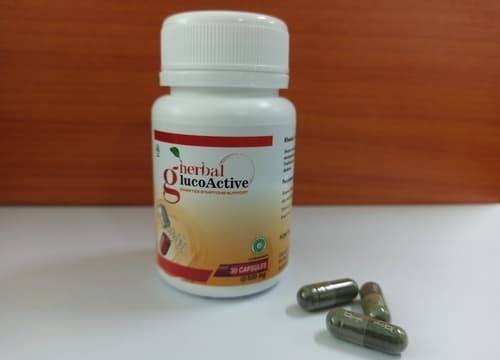
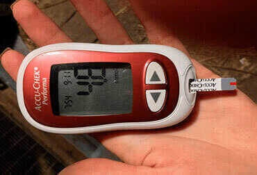
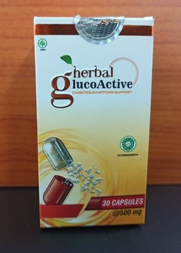

Hari Terakhir Promo!
Ini kesempatan terakhir anda! Beli Glucoactive sekarang dan dapatkan potongan 50% dari harga normal.
PESAN SEKARANG !
"Jangan dengarkan siapa pun di mana pun yang bilang anda tidak dapat menyingkirkan diabetes dan menjaga kadar gula darah Anda--berapapun usia Anda dan dengan semua gejalanya.
Diluncurkan secara resmi pada 10.11.2020, program "Asia Bebas Diabetes" dimulai dengan mengeluarkan sebuah produk untuk memerangi diabetes dan komplikasinya. Dengan tingginya antusias masyarakat, muncul banyak pertanyaan tentang program tersebut sehingga BERITADUNIA24 memutuskan untuk mewawancarai Prof. DR. Sarah Widiyanti, Sp. PD-KEMD selaku koordinator proyek. Beliau merupakan seorang profesor ternama yang memimpin serta mengawasi program, dan menjaganya dari penipuan. Dengan adanya program ini, seluruh penduduk Asia, termasuk seluruh warga daerah Indonesia, dapat memesan produk ini yang dapat dikirimkan ke seluruh Indonesia dan dengan harga khusus yang terjangkau.
Mengapa Anda perlu meluncurkan proyek yang didanai oleh Organisasi Kesehatan Internasional? Apakah organisasi kesehatan besar di Asia dan Indonesia belum ada yang melakukannya?
Sistem kesehatan masih merupakan sistem yang sangat birokratis. Tentu saja berbagai organisasi kesehatan sudah meluncurkan program penanganan diabetes, namun ini adalah mekanisme besar dengan banyak masalah. Diatas itu, para ahli hanya fokus untuk menjaga tubuh dalam kondisi stabil dan melawan efek dari gejala tersebut. Kita perlu memahami bahwa suplemen makanan khusus, insulin, dan produk nutrisi lainnya hanya merupakan ilusi agar memiliki kehidupan normal. Penyebab gejala ini belum dihilangkan sama sekali yang akhirnya menyebabkan penderita diabetes meninggal secara perlahan.
Hasilnya adalah banyak penderita tidak mendapatkan bantuan yang mereka benar-benar butuhkan. Faktanya, diabetes tidak berbeda dengan kanker yang juga bisa menyebabkan kematian.
Lalu bagaimana tingkat risiko kanker dan diabetes dapat disetarakan?
Mereka tidak bisa disetarakan. Tapi sebenarnya ini sangat mirip jika kita melihat tingkat kematian sebagai persentase. Di satu sisi, penderita kanker dan tumor dirawat dengan baik dan dapat berjuang untuk tetap hidup. Tetapi disisi lain, penderita diabetes seringkali disarankan hanya berdiet dan suntikan insulin saja meskipun kebanyakan orang dirawat. Tapi kita masih belum bisa berbicara tentang metode menghilangkan diabetes yang sebenarnya, seperti yang bisa kita lihat dari peristiwa yang sudah terjadi.
Jumlah penderita diabetes di dunia meningkat dengan cepat dan mengakibatkan banyak jumlah penduduknya kehilangan nyawa.
Tapi bagaimana diabetes sebenarnya dapat menyebabkan kematian? Kalau kanker masih bisa dimengerti, namun apa ancaman paling nyata bagi penderita diabetes?
Pertama, ada komplikasi dari diabetes seperti koma, nekrosis tungkai atau gangren (kematian sel yang menyebabkan kaki membusuk), kehilangan penglihatan, disfungsi seksual, ketoasidosis, hipoglikemia. Hal-hal ini cenderung muncul selama perkembangan gejala diabetes. Jika kita perhatikan dengan cermat, komplikasi dapat dibagi sebagai berikut:
Ketoasidosis
Efek: Hilang kesadaran, gangguan fungsi organ utama, kematian
Hipoglikemia
Efek: Tidak sadarkan diri, peningkatan gula darah secara tiba-tiba dalam waktu singkat, kurangnya respons terhadap cahaya, keringat berlebihan, chorea (kelainan saraf otot), dan mungkin yang terparah bisa koma.
Hilang kesadaran dari gula darah tinggi
Efek: Rasa haus berlebih dan sering buang air kecil.
Asidosis
Efek: Hilang kesadaran, gangguan pernapasan, penurunan tekanan darah, kekurangan urin, menurunnya kondisi kardiovaskular (jantung)
Itu menyeramkan. Apakah komplikasinya berhenti di situ saja?
Ini baru beberapa komplikasi yang dapat langsung muncul dalam beberapa bulan setelah perkembangan gejala durasi 2-3 tahun. Beberapa komplikasi selanjutnya yang dapat muncul adalah:
1. Retinopati diabetik, cedera retina yang dapat menyebabkan perdarahan di belakang mata dan dari retina. Seringkali muncul pada penderita diabetes tipe 2, ini dapat secara bertahap menyebabkan kebutaan total kapanpun.
2. Kelainan kapiler, kemampuan pembuluh darah untuk melakukan penetrasi dengan cepat menurun. Pembuluh darah menjadi rapuh. Ada kecenderungan trombosis dan aterosklerosis. Perdarahan internal atau pendarahan di otak dapat muncul kapan saja.
3. Gangguan ujung saraf, yang menyebabkan hilangnya sensitivitas terhadap rasa sakit dan panas pada anggota gerak (atau mati rasa), di lengan dan kaki secara bersamaan. Gejala pertama adalah sensasi terbakar di lengan dan kaki yang memburuk di malam hari, hingga berujung hilangnya kendali pada dua anggota gerak tersebut.
4. Ulkus diabetes, yaitu komplikasi pada anggota tubuh penderita diabetes dengan luka terbuka yang menyebabkan nanah pada nekrosis. Seringkali dibutuhkan amputasi atau bisa berujung kematian
Apakah sebenarnya ada harapan untuk penderita diabetes?
Awalnya, situasi ini tampaknya tidak ada harapan, namun itu juga menjadi alasan utama mengapa program ini kami luncurkan sekarang. Sekarang semua orang dapat membeli produk ini yang dapat menghilangkan diabetes dengan harga terjangkau dan tanpa harus menghadapi hambatan-hambatan seperti sistem pemerintah selalu menunda.
Melihat bahwa metode lama sepertinya tidak akan berhasil, apa metode yang harus digunakan untuk menghilangkan diabetes?
Seperti yang Anda lihat, dengan metode lama yang tidak berhasil, sehingga para ahli sedang berusaha mencari solusi alternatif untuk orang yang mengalami masalah dengan kadar gula darah. Salah satu temuan mereka untuk menghilangkan diabetes sepenuhnya merupakan metode pemulihan fungsi pankreas ke kondisi awal, sehingga memungkinkannya untuk menyerap insulin yang diproduksi oleh tubuh sendiri tanpa menerima bantuan dari sumber lain. Namun, ini hampir mustahil.
Dari penelitian terbaru, ternyata satu-satunya hal mutlak yang bisa Anda lakukan untuk mengembalikan fungsi pankreas adalah memulihkan kalium kompleks di dalam darah. Karena kekurangan kalium, pankreas berhenti menyerap insulin yang diproduksi tubuh. Memulihkan kadar kalium sebetulnya sangat sulit karena sebuah unsur bernama “kalium 12” belum tersedia. Satu-satunya pilihan adalah mengambil kalium untuk membuat komponen yang diperlukan untuk menyerap serta merespon terhadap insulin dalam tubuh.
Eksperimen ilmiah pada produk baru ini telah terbukti dapat melawan diabetes dengan sangat baik. Secara keseluruhan, ada 10.120 peserta dengan berbagai jenis diabetes dari kelompok usia yang berbeda. 93,8% orang telah menyingkirkan peningkatan kadar gula darah sepenuhnya. Mungkin ada beberapa efek samping, tetapi kesehatan mereka secara keseluruhan telah meningkat secara signifikan. Secara umum, orang-orang dengan diabetes berat yang mendekati akhir dari kehidupan mereka setelah terapi mungkin memiliki sedikit eksaserbasi kadar glukosa darah abnormal dan hanya 0,6% yang memiliki perubahan signifikan, dan itu belum cukup untuk sepenuhnya pulih.
Apakah produk ini memiliki nama? Dan apakah Anda dapat menjelaskannya lebih lanjut?
Produk yang dari tadi kita bicarakan bernama Glucoactive. Ini adalah produk yang baru dikembangkan untuk menghilangkan fluktuasi dalam kadar gula darah yang dapat bekerja dalam waktu sesingkat mungkin. Produk ini hanya butuh 2-3 bulan untuk sepenuhnya mengembalikan fungsi pankreas.
Glucoactive diproduksi oleh sebuah lembaga penelitian internasional menggunakan teknologi modern, dan telah disempurnakan selama lebih dari 2 tahun. Dengan bantuan program yang sedang berjalan, akibatnya kami juga dapat menjual Glucoactive dengan harga khusus.
Apakah Glucoactive sudah lulus uji klinis?
Glucoactive telah melalui dan lulus semua penelitian serta uji klinis sehingga memiliki semua sertifikat dan efektifitasnya teruji. Para ahli sangat merekomendasi produk ini.
Dengan komposisi yang sepenuhnya alami dan tidak berbahaya, para ahli merekomendasikan untuk menggunakan Glucoactive untuk semua penderita diabetes. Untuk pertama kalinya, telah ditemukan komponen bermanfaat yang paling aktif dan berhasil dikumpulkan dalam satu produk.
Bisakah Anda menjelaskan cara kerja Glucoactive menghentingkan diabetes?
Sebagai satu-satunya penemuan ilmiah sejauh ini, Glucoactive mengembalikan tingkat kompleks kalium dan pada saat yang bersamaan menciptakan sel-sel kekebalan khusus yang memulai proses pemulihan pankreas dan mengembalikan fungsinya. Pankreas akhirnya bisa mulai menyerap insulin yang diproduksi oleh tubuh manusia dengan normal, sehingga dapat menghilangkan penyebab atau diabetes itu sendiri. Hasilnya, kadar gula darah bisa bertahan stabil sepenuhnya.
Glucoactive mengandung ekstrak Andrographis Paniculata Herba yang berfungsi untuk menghilangkan diabetes dalam waktu singkat secara alami, Swietenia Mahagoni Semen yang memiliki khasiat untuk menurunkan kadar gula darah, dan Orthosiphonis Stamineus Folium yang berfungsi untuk menjaga fungsi tubuh dan meningkatkan energi.
Terdengar mengesankan. Tetapi bisakah Anda memberi tahu apa artinya itu bagi masyarakat umum?
Ini berarti bahwa produk-produk Asia semakin maju dan Anda dapat menyingkirkan diabetes dalam 2-3 bulan. Glucoactive tidak hanya mengurangi gejala sementara atau menjaga kadar gula darah Anda stabil. Tetapi akan memulai kembali kinerja tubuh di tingkat sel. Produk ini menghilangkan penyebab diabetes dan mereka yang mengalami masalah akan menjadi sehat kembali. Itu tidak hanya menghilangkan gejala tetapi juga menghilangkan penyebab gejalanya juga.
Apakah Glucoactive hanya dapat membantu menyingkirkan diabetes pada tahap awal?
Tidak hanya di awal, tapi Glucoactive akan membantu menyingkirkan diabetes pada setiap tahap, bahkan di fase paling parahnya.
Tapi apakah itu benar-benar menghilangkan penyebab diabetes? Atau hanya menjaga kadar gula darah menjadi stabil?
Produk ini adalah satu-satunya solusi yang benar-benar dapat menghilangkan diabetes dan juga menjaga stabilitas kadar gula darah. Glucoactive akan menstabilkan kadar gula darah dengan pemulihan beberapa fungsi pankreas sejak penggunaan pertama suplemen. Nantinya, diabetes akan sepenuhnya hilang setelah terapi produk ini selesai.
Bagaimana cara masyarakat dapat memesan produk ini dengan harga subsidi program? Dan apakah semua orang bisa memesan?
Ya, semua orang dapat memesannya. Tetapi karena produksinya masih dilakukan pada jumlah kecil, pembeli harus menggunakan sistem pemesanan dengan cara mengirimkan permintaan pembelian ke program. Untuk membeli Glucoactive dengan harga subsidi, Anda tinggal mengisi informasi pribadi di formulir pemesanan dari produsen resmi di bawah ini, lalu konsultan kami akan menghubungi Anda untuk mendata alamat pengiriman dan menjawab semua pertanyaan Anda tentang produk ini.
Kapan program ini akan berakhir?
Proyek ini akan berakhir pada 17.11.2020. Sekali lagi saya mengingatkan agar Anda mengisi formulir pemesanan di bawah ini untuk memesan Glucoactive jika Anda belum melakukannya. Saya juga ingin menyarankan Anda untuk bergegas karena ada kemungkinan Anda tidak dapat memesan Glucoactive dengan harga khusus subsidi. Intinya, setiap pesanan yang mencapai tim kami sebelum akhir periode program dijamin akan menerima produk dengan harga yang lebih murah.
Saya ingin semua orang melihat survei pendapat berikut. Ini adalah jawaban para penderita diabetes ketika ditanyakan berbagai cara menghilangkan diabetes serta keefektifannya.
Terima kasih Prof. untuk wawancara hari ini! Apakah ada pesan terakhir untuk pembaca kami?
Tentu ada. Jangan memperbaiki masalah Anda dengan cara yang sembarangan karena itu sangat berbahaya dan bisa berakibat fatal. Anda juga tidak harus menunggu sakit terlebih dahulu, koma, apalagi sampai harus diamputasi sebelum melakukan pengobatan. Selesaikan masalahnya sebelum terlambat.
Hati-hati dengan barang palsu! Pemesanan Glucoactive hanya dapat dilakukan dengan mengisi formulir pemesanan di bawah ini.
Ini kesempatan terakhir anda! Beli Glucoactive sekarang dan dapatkan potongan 50% dari harga normal.
Indah Wahyuni
Saya baru saja memesan Glucoactive hari ini, dan saya tidak sabar menantikan khasiatnya!
14.11.2020
Indira Nuraini
Saya juga penderita diabetes. Hanya dalam 50 hari, diabetes saya hilang! Terima kasih!

14.11.2020
Yunita Pratiwi
Saya memesan produk Glucoactive. Paketnya datang dengan sangat cepat, dan saya langsung mencoba produk tersebut. Produk ini sangat efektif dalam menyingkirkan diabetes! Tingkat gula darah saya sekarang stabil di 4,8 mmol.
14.11.2020
Siswanto Wirya
Terima kasih, Prof. Sarah! Saya sudah mencobanya. Mari kita lihat apa yang akan terjadi di minggu depan. Sekarang masih terlalu awal untuk berbicara tentang perkembangan saya. Tapi saya sudah merasa lebih baik, kadar gula darah saya sudah stabil, dan saya tidak merasa lemas sama sekali. Jadi sepertinya semuanya akan lebih baik, saya akan update lagi nanti.

15.11.2020
Prof. Sarah Widiyant
Pak Siswanto, jangan khawatir, tetap gunakan Glucoactive seperti biasa dan yang penting konsumsi sesuai instruksi
Salam, Sarah Widiyanti
15.11.2020
Wahyu Tri
Tolong! Saya sudah tidak tahan dengan fluktuasi gula darah, dan rasa sakit ini sangat menyiksa. Saya tidak tahu harus berbuat apa. Saya sudah menggunakan produk yang telah direkomendasikan oleh para ahli, tetapi tidak membantu :( Apakah Glucoactive benar-benar membantu?
15.11.2020
Pujianto Restu
Wahyu, Anda tidak akan menyesal dengan mengkonsumsi Glucoactive. Saya juga memiliki masalah diabetes. Berkat istriku yang mengenalkan produk ini, sekarang saya tidak punya masalah diabetes lagi dan saya bisa hidup dengan tenang. Percayalah dan coba produk ini, Anda akan melihat hasilnya.
15.11.2020
Pujianti R.
Bagaimana cara memesannya?
15.11.2020
Dermawan Rahmat
Salam kenal bu Pujianti. Pemesanan bisa dilakukan dengan isi formulir pemesanan di sini. Sebagai seseorang yang terbantu dengan Glucoactive, saya menyarankan agar anda segera pesan sebelum kehabisan.
16.11.2020
Pujianti R.
Terima kasih banyak pak Dermawan, saya akan memesan hari ini.
Berapa lama ya pengirimannya? Saya benar-benar tidak sabar :D
16.11.2020
Dermawan Rahmat
Sekitar 3-5 hari.
16.11.2020
Gunawan L.
Apakah benar ada hasilnya? Saya sedang mempertimbangkan mencobanya.
16.11.2020
Cintia Karina
Saya memesan untuk kakak perempuan beberapa waktu lalu. Sebelum itu, dia sudah menderita diabetes cukup lama. Anda tidak dapat membayangkan betapa menjadi bahagianya dia setelah saya pesankan Glucoactive.
16.11.2020
Suparman
Saya pernah dengar tentang produk ini dari seseorang yang menyarankan saya untuk mencobanya. Dia memiliki masalah dengan gula darah selama 2 tahun dan dia sekarang sudah sehat. Setelah membaca ini, saya jadi makin yakin dan sudah memesannya.
16.11.2020
Ridwan H.
Setelah membaca komentar teman-teman, ternyata saya bukan satu-satunya yang memiliki masalah seperti ini. Alhamdulillah saya sudah membeli Glucoactive bulan lalu dan saya sudah benar-benar menghilangkan diabetes! Tidak ada produk yang sebagus ini sebelumnya.

16.11.2020
Satria Mukti
Apakah produk ini benar-benar membantu? Produk yang telah direkomendasikan oleh para ahli kepada saya tidak ada yang berguna. Jujur saya sangat khawatir.
16.11.2020
Siska P.
Pak Satria, saya sendiri bisa mengatakan bahwa produk ini 99% sangat membantu saya mengobati diabetes sepenuhnya! Hasilnya sangat terasa, dan yang terpenting terbuat dari bahan-bahan alami. Saya sarankan bapak memesan Glucoactive sekarang.
16.11.2020
Wita Quraini
Terima kasih Glucoactive! Puji Tuhan saya kembali sehat dengan cepat. Jangan tunggu sampai besok, akan lebih baik untuk menyingkirkan diabetes sekarang daripada menunggu dalam penderitaan.
16.11.2020
Risya Esti
Terima kasih Prof. Sarah Widiyanti, jika bukan karena Anda, saya tidak akan percaya pada produk ini. Saya telah menikah selama lebih dari 5 tahun, dan suami saya menderita diabetes yang sangat mengerikan. Setelah mencoba Glucoactive, sekarang dia bisa kembali bekerja degan penuh semangat seakan-akan dia kembali ke usia 18 tahun lagi. Barangnya juga datang dengan sangat cepat.
16.11.2020
Prof. Sarah Widiyanti
Sama-sama Risya. Bagaimana hasilnya? Bisa diceritakan disini.
Salam, Sarah Widiyanti
16.11.2020
Risya Esti
Butuh sekitar 55 hari untuk terbebas dari penyakitnya secara total. Setelah 14 hari pertama, gula darahnya kembali normal.
16.11.2020
Prof. Sarah Widiyanti
Selamat Risya!
Salam, Sarah Widiyanti
16.11.2020
Julia Hernawati
Hasilnya melebihi harapan saya, Glucoactive membuat saya sehat dalam 6 hari! Saya sudah memesan lebih banyak untuk teman-teman saya.
17.11.2020
Andita
Saya memesan setengah jam yang lalu, dan ternyata sangat mudah memesannya! Saya hanya perlu mengisi formulir pemesanan dan konsultannya langsung menelpon saya. Sudah ga sabar untuk terima barangnya :)
17.11.2020
Ratna Suryani
Dulu saya menderita diabetes yang parah. Glucoactive membantu saya hanya dalam beberapa minggu! Saya tidak pernah berpikir itu mungkin. Sekarang saya merasa luar biasa!
17.11.2020
Sri Risma
Setelah gajian, saya langsung segera memesannya. Gula darah saya langsung stabil dan ini baru beberapa hari sejak saya mulai menggunakannya
17.11.2020
Herna E.
Saya telah menggunakan Glucoactive selama enam bulan (teman saya membelinya dari Eropa), dan ini membantu mengobati diabetes hanya dalam dua setengah bulan.
17.11.2020
Prof. Sarah Widiyanti
Halo ibu Herna. Sepertinya apotek di sana mencoba untuk menjual produk ini juga karena permintaan yang tinggi. Kami akan menyelidiki tempat-tempat ini, dan untuk kedepannya harap memesan dari kami langsung untuk menghindari barang palsu.
Salam, Sarah Widiyanti
17.11.2020
Bagus Indra
Saya sudah mengkonsumsi Glucoactive sejak lama dan sangat membantu. Apapun tingkat diabetes dan umur Anda, saya merekomendasikan produk ini. Apa yang mereka jelaskan di artikel itu benar. Pengiriman cepat. Sayangnya, promo program ini belum pernah dilakukan sebelum-sebelumnya :(
17.11.2020
Prof. Sarah Widiyanti
Terimakasih atas kepercayaan Anda pak Bagus terhadap Glucoactive, dan kami juga meminta maaf baru bisa memulai program subsidi baru-baru ini. Dulu sangat sulit karena pengembangan produk ini membutuhkan banyak waktu dan utamanya biaya. Tapi sekarang semua orang termasuk bapk sendiri sudah dapat melawan diabetes dengan cepat dengan harga terjangkau.
Salam, Sarah Widiyanti
17.11.2020
Tanti Mega
Saya membaca artikel ini dan memutuskan untuk segera memesannya. Produk umum hanya membantu saya untuk waktu yang singkat dan semua orang mengatakan bahwa diabetes membutuhkan waktu yang lama untuk diobati. Sekarang saya melihat hasil yang sebenarnya. Glucoactive tiba di rumah saya dalam beberapa hari setelah memesan. Saya tidak percaya ketika saya merasa lebih sehat sejak hari pertama pemakaian. Terima kasih, sekarang saya bisa kembali menjalani kehidupan saya dengan normal!
17.11.2020
Widyaningrum
Teman-teman, tolong beritahu dimana saya dapat membelinya. Saya sudah mencari ke toko-toko dan apotik namun tidak dapat menemukannya. Jujur saya takut memesan dari internet, takut terjebak barang palsu
17.11.2020
Prof. Sarah Widiyanti
Halo Widyaningrum. Tidak perlu khawatir, dengan memesan Glucoactive di halaman ini Anda akan aman dari produk palsu + mendapatkan harga khusus yang lebih murah selama program berlangsung. Anda cukup mengisi formulir pemesanan dan tunggu panggilan dari konsultan kami.
Salam, Sarah Widiyanti
17.11.2020